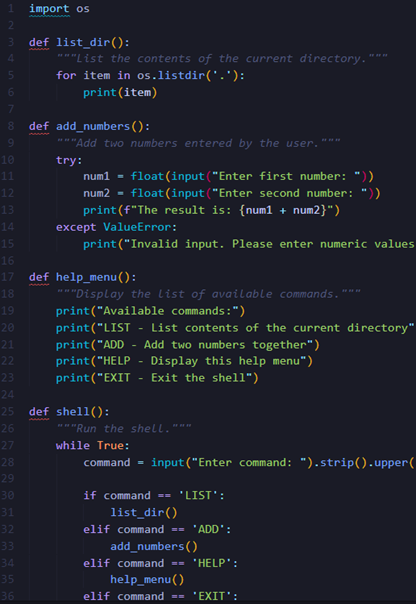
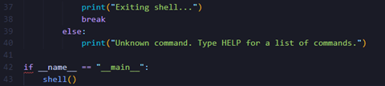
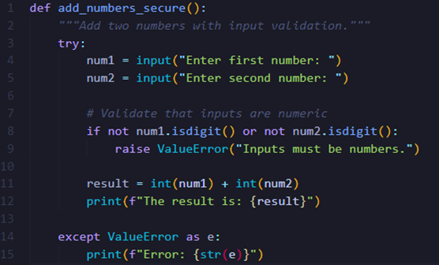
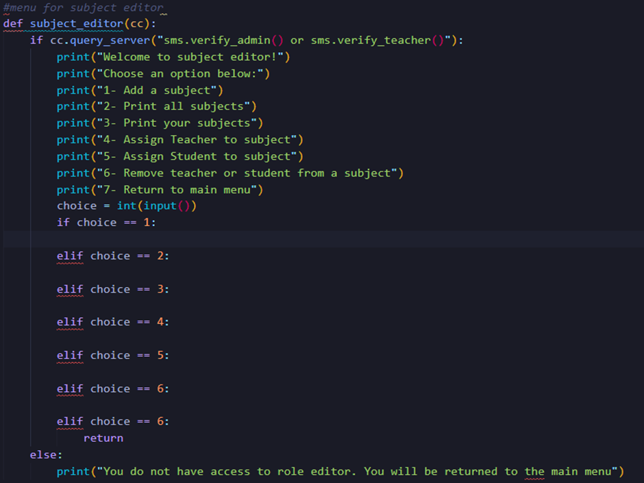
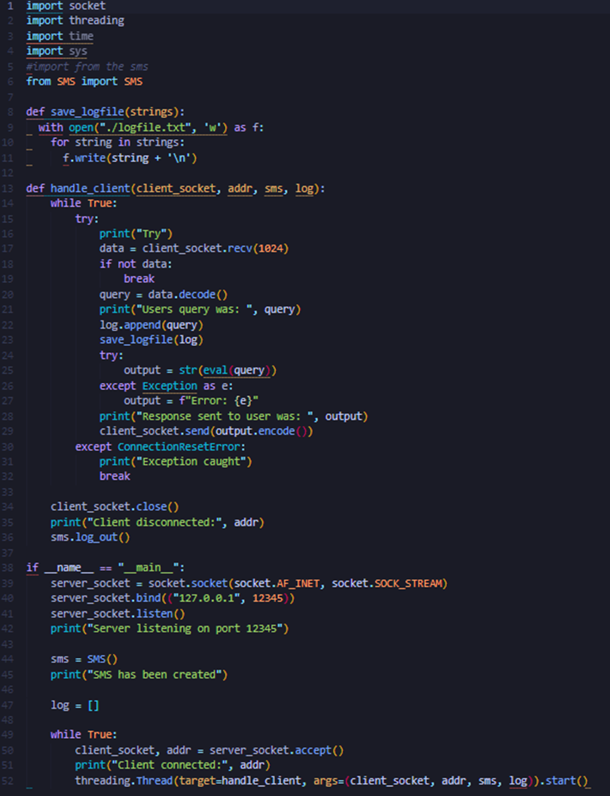

Ontology
Based on the ontology described in the OWL-SOA article, the proposed ontology helps in structuring a service-oriented architecture (SOA) to support the search and reuse of services during development. Unlike runtime-focused models like OWL-S or WSMO, OWL-SOA is designed to be independent of the technology and integrates service discovery into the development process. It organizes services, interfaces, and business processes, making services reusable across different implementations.
For the system design, you could create an ontology that defines key entities such as Users, Services, Roles, and Interactions. For example:
Users: Entities that interact with the system, categorized by role (e.g., Admin, Developer, Customer).
Services: Functionalities available in the system (e.g., Login Service, Payment Service).
Interfaces: Methods or APIs to access the services.
Business Processes: High-level workflows that combine services for user needs (e.g., Purchase Process).
Implementation Artifacts: Documentation and test cases related to each service.
This ontology would help standardize service management during development and ensure consistent reuse across the system.
References:
Arnaut, W. Oliveira, K. and Lima, F. (2010) OWL-SOA: A service oriented architecture ontology useful during development time and independent from implementation technology. Fourth International Conference on Research Challenges in Information Science (RCIS), Nice, France, 2010, pp. 523-532. DOI: 10.1109/RCIS.2010.5507314.
Python shell task:


Security Vulnerabilities:
Command Injection: The shell may be vulnerable to command injection, where users can attempt to enter malicious commands. For example, directly executing shell commands in user input would expose it to this risk.
Input Validation: The ADD function lacks proper input validation and sanitization, potentially allowing non-numeric input or malformed data.
Recommendation:
Sanitize Inputs: Implement input sanitization and validation to ensure that user inputs are safe, limiting the scope for injection attacks or incorrect data types.
Pseudocode:

Lecture summary:
This lecture looked at operating system security. It started with the 4 main functions of an OS and how the interface works to limit what users interact with. The lecture then covered the ideas behind research management and scheduling and how this is implemented. The lecture then looked at the history of operating systems starting with the LEO and ending with Mobile OS. This section of the lecture was very interesting to read about how OS’s have developed and changed over time.
Project update:
I began my project this week by adding the basics like a main menu and adding in the outline for the CRUD functions. I have thought about how I want these to be implemented and what features I would like to include based on the design document. I have been using comments throughout my code to try and keep it organized and readable. I am also planning on creating different files for the different classes to keep things neat and tidy. Below is a screenshot of my work so far. I have tried to implement a server and client for the project. I plan to work on it more during the weekend.

